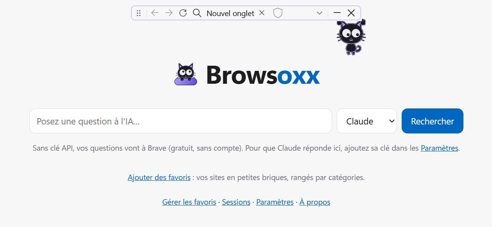
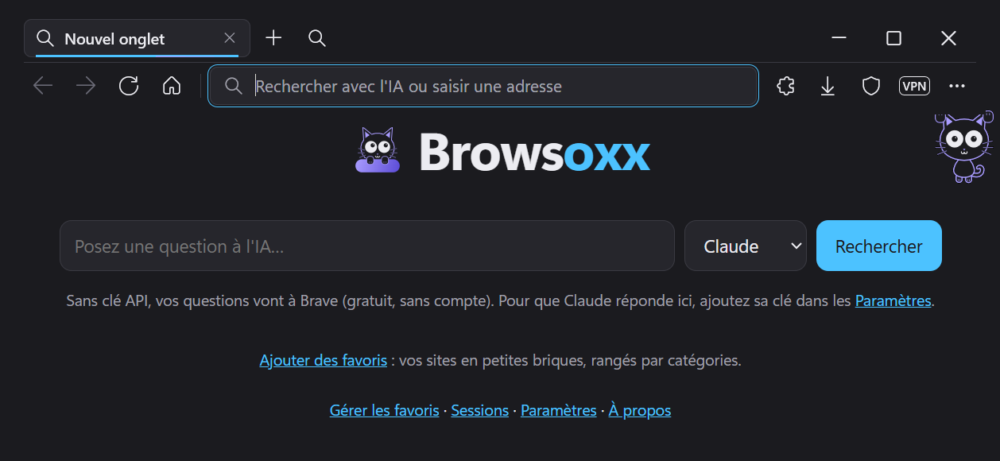

Browsoxx laisse toute la fenêtre à la page : sa mini barre flotte au-dessus. Bro, le chat, cherche pour toi, range tes onglets et remplit les formulaires.
Browsoxx est construit sur le moteur Chromium de Microsoft Edge : les sites s'affichent comme dans Chrome ou Edge.
Pas de bande réservée en haut de l'écran. La mini barre flotte au-dessus de la page et se range où tu veux.
Ouvrir, trier ou comparer des onglets, chercher, remplir un formulaire : tu demandes, Bro le fait.
Pose une question dans la barre d'adresse : la réponse arrive avec les pages qui la justifient.
Bloqueur intégré, et les extensions du Chrome Web Store, comme Dashlane pour tes mots de passe.
Groupes repliables, liste des onglets avec recherche, sessions restaurées, navigation privée.
Un onglet que tu ne regardes plus se met en veille après 5 minutes et se réveille quand tu y reviens.


Cette liste se met à jour toute seule depuis GitHub. Browsoxx vérifie la signature de chaque version avant de te la proposer.
Un seul fichier, Browsoxx-Setup.exe. Pas besoin d'être administrateur.
TéléchargerL'installeur n'est pas encore signé, alors Windows prévient. Clique sur « Informations complémentaires », puis sur « Exécuter quand même ».
Il installe le moteur WebView2 s'il manque, puis te demande avec quelle IA réfléchir. Les mises à jour suivantes, c'est lui qui te les propose.
Windows 10 (version 1809 ou plus récente) ou Windows 11, en 64 bits. Tes données restent dans ton dossier Windows ; la désinstallation te demande si tu veux les garder.
Ton historique et tes favoris restent sur ton ordinateur.Rien n'est synchronisé ailleurs.
Bro ne lit que ce que tu lui demandes.Ta demande et les pages lues partent chez l'IA choisie (ChatGPT ou Claude), et nulle part ailleurs.
Aucune télémétrie de Browsoxx.Deux services de Microsoft restent actifs : SmartScreen vérifie les adresses visitées (désactivable), et WebView2 suit les réglages de diagnostic de Windows.
Une vérification de version par jour.Browsoxx lit la liste des versions sur GitHub. GitHub ne voit que ton adresse IP et le numéro de version, comme pour toute page web. Rien ne s'installe sans ton accord.